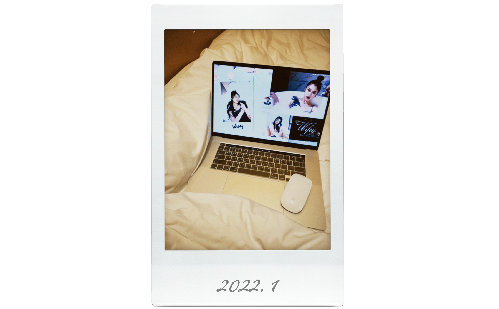

2022.1.
어느날
SNS를 하던 중 누군가 올린 카모의 ‘life is wet’ 뮤직 비디오를 우연히 보게 된다. 노래가 굉장히 외국 힙합스러워서 처음 듣자마자 너무 좋다고 생각했고 이 래퍼는 누구지?하며 유튜브에 life is wet을 검색해보았다. 찾아보니 Camo라는 신인 아티스트의 노래였고 그녀의 데뷔곡 ‘Wifey’의 뮤직 비디오를 보게 된다. ‘Wifey’의 뮤직 비디오를 처음 본 순간 첫눈에 반하듯이 빠져들게 되었다. 산뜻하지만 힙한 노래와 중독성 있는 멜로디,, 그리고 너무 이쁜 카모의 미모,, 참고로 이 노래를 멜론에서만 3000번 넘게 들었다. 같이 사는 동거인은 내가 이 노래를 맨날 틀어서 이 노래의 가사를 거의 다 외웠다.